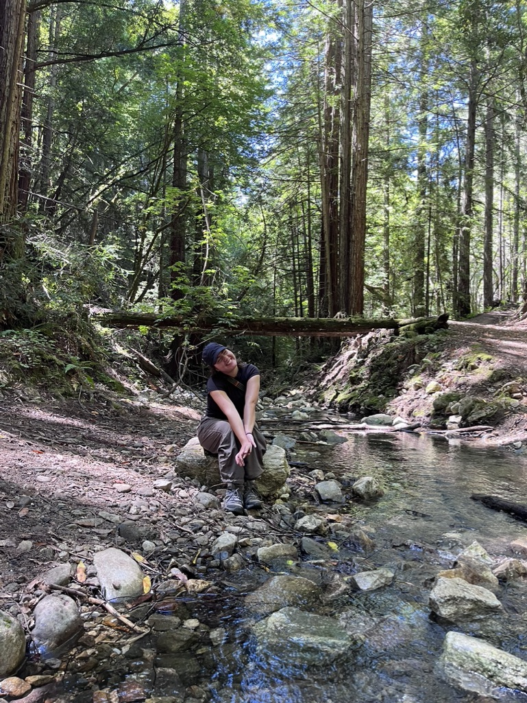

Jordan's Homepage

About Me
Hi, my name is Jordan! I am currently in my last quarter as a Politics major at UCSC. When I'm not busy with school and work I love spending time outside, cooking, and painting. Recently I have been hiking, running, or riding my bike almost everyday and really enjoying the spring weather! I am very excited to graduate this coming June and figure out my post-grad path. I'm hoping to have more time to spend on my interests and hobbies, and hopefully find some new ones as well